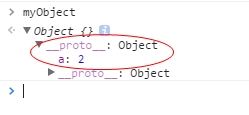
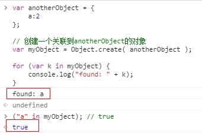
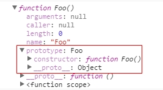
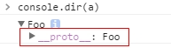
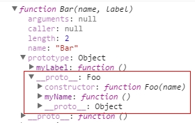

[[Prototype]]
JavaScript中的对象有一个特殊的[[Prototype]]内置属性，其实就是对于其他对象的引用。
几乎所有的对象在创建时[[Prototype]]属性都会被赋予一个非空的值。
思考下面代码：
1 | var myObject = { |
当你试图引用对象的属性时会触发[[Get]]操作，比如myObject.a。
对于默认的[[Get]]操作来说，第一步是检查对象本身是否有这个属性，如果有的话就使用它。
但是如果a不在myObject中，就需要使用对象的[[Prototype]]链了。
对于默认的[[Get]]操作来说，如果无法在对象本身找到需要的属性，就会继续访问对象的[[Prototype]]链：
1 | var anotherObject = { |

Object.create(..)会创建一个对象并把这个对象的[[Prototype]]关联到指定的对象。
现在myObject对象的[[Prototype]]关联到了anotherObject。
显然我们并没有定义myObject.a，但是尽管如此，属性访问仍然成功地（在anotherObject中）找到了值2。
但是，如果anotherObject中也找不到a并且[[Prototype]]链不为空的话，就会继续查找下去。
这个过程会持续到找到 匹配的属性名或者 查找完整条[[Prototype]]链。
如果是后者的话，[[Get]]操作的返回值是undefined。
in 操作符
使用for..in遍历对象时原理和查找[[Prototype]]链类似，任何可以通过原型链访问到（并且是enumerable）的属性都会被枚举。
使用in操作符来检查属性在对象中是否存在时，同样会查找对象的整条原型链（无论属性是否可枚举）：
1 | var anotherObject = { |

因此，当你通过各种语法进行属性查找时都会查找[[Prototype]]链，直到找到属性或者查找完整条原型链。
Object.prototype
所有普通的[[Prototype]]链最终都会指向内置的Object.prototype。
由于所有的“普通”（内置，不是特定主机的扩展）对象都“源于”（或者说把[[Prototype]]链的顶端设置为）这个Object.prototype对象，所以它包含JavaScript中许多通用的功能。
属性设置和屏蔽
1 | myObject.foo = "bar"; |
如果myObject对象中包含名为foo的普通数据访问属性，这条赋值语句只会修改已有的属性值。
如果foo不是直接存在于myObject中，[[Prototype]]链就会被遍历，类似[[Get]]操作。
如果原型链上找不到foo，foo就会被直接添加到myObject上。
然而，如果foo存在于原型链上层，赋值语句myObject.foo = "bar"的行为就会有些不同（而且可能很出人意料）。稍后我们会进行介绍。
屏蔽
如果属性名foo既出现在myObject中也出现在myObject的[[Prototype]]链上层，那么就会发生屏蔽。
myObject中包含的foo属性会屏蔽原型链上层的所有foo属性，因为myObject.foo总是会选择原型链中最底层的foo属性。
有些时候不能屏蔽属性
下面我们分析一下如果foo不直接存在于myObject中而是存在于原型链上层时，运行下面代码会出现的三种情况。
1 | myObject.foo = "bar"; |
- 如果在
[[Prototype]]链上层存在名为foo的普通数据访问属性并且没有被标记为只读（writable:false），那就会直接在myObject中添加一个名为foo的新属性，它是 屏蔽属性。 - 如果在
[[Prototype]]链上层存在foo，但是 它被标记为只读（writable:false），那么无法修改已有属性或者在myObject上创建屏蔽属性。如果运行在严格模式下，代码会抛出一个错误。否则，这条赋值语句会被忽略。总之，不会发生屏蔽。 - 如果在
[[Prototype]]链上层存在foo并且它是一个setter（参见第3章），那就一定会调用这个setter。foo不会被添加到（或者说屏蔽于）myObject，也不会重新定义foo这个setter。
隐式产生屏蔽
1 | var anotherObject = { |
如果想让anotherObject.a的值增加，唯一的办法是anotherObject.a++。
类
在JavaScript中，类无法描述对象的行为，（因为根本就不存在类！）对象直接定义自己的行为。
“类” 函数
所有的函数默认都会拥有一个名为prototype的公有并且不可枚举（参见第3章）的属性，它会指向另一个对象：
1 | function Foo() { |

这个对象通常被称为Foo的原型，因为我们通过名为Foo.prototype的属性引用来访问它。
抛开名字不谈，这个对象到底是什么？
最直接的解释就是，这个对象是在调用new Foo()时创建的，最后会被（有点武断地）关联到这个Foo.prototype对象上。
1 | function Foo() { |

调用new Foo()时会创建a，其中的一步就是给a一个内部的[[Prototype]]链接，关联到Foo.prototype指向的那个对象。
继承意味着复制操作，JavaScript（默认）并不会复制对象属性。
相反，JavaScript会在两个对象之间创建一个关联，这样一个对象就可以通过 委托访问另一个对象的属性和函数。
委托这个术语可以更加准确地描述JavaScript中对象的关联机制。
构造函数
实际上，new会劫持所有普通函数并用构造对象的形式来调用它。
换句话说，在JavaScript中对于“构造函数”最准确的解释是，所有带new的函数调用。
函数不是构造函数，但是当且仅当使用new时，函数调用会变成“构造函数调用”。
可以给Foo.prototype添加一个.constructor属性，不过这需要手动添加一个符合正常行为的不可枚举属性。
1 | function Foo() { /* .. */ } |
对象的.constructor会默认指向一个函数，这个函数可以通过对象的.prototype引用。
记住这一点“constructor并不表示被构造”。
.constructor并不是一个不可变属性。
它是不可枚举的，但是它的值是可写的（可以被修改）。
此外，你可以给任意[[Prototype]]链中的任意对象添加一个名为constructor的属性或者对其进行修改，你可以任意对其赋值。
（原型）继承
1 | function Foo(name) { |

这段代码的核心部分就是语句Bar.prototype = Object.create( Foo.prototype )。调用Object.create(..)会凭空创建一个“新”对象并把新对象内部的[[Prototype]]关联到你指定的对象（本例中是Foo.prototype）。
换句话说，这条语句的意思是：“创建一个新的Bar.prototype对象并把它关联到Foo.prototype”。
声明function Bar() { .. }时，和其他函数一样，Bar会有一个.prototype关联到默认的对象，但是这个对象并不是我们想要的Foo.prototype。因此我们创建了一个新对象并把它关联到我们希望的对象上，直接把原始的关联对象抛弃掉。
下面这两种方式是常见的错误做法，实际上它们都存在一些问题：
1 | // 和你想要的机制不一样！ |
Bar.prototype = Foo.prototype并不会创建一个关联到Bar.prototype的新对象，它只是让Bar.prototype直接引用Foo.prototype对象。
因此当你执行类似Bar.prototype.myLabel = ...的赋值语句时会直接修改Foo.prototype对象本身。
显然这不是你想要的结果，否则你根本不需要Bar对象，直接使用Foo就可以了，这样代码也会更简单一些。
Bar.prototype = new Foo()的确会创建一个关联到Bar.prototype的新对象。
但是它使用了Foo(..)的“构造函数调用”，如果函数Foo有一些副作用（比如写日志、修改状态、注册到其他对象、给this添加数据属性，等等）的话，就会影响到Bar()的“后代”，后果不堪设想。
因此，要创建一个合适的关联对象，我们必须使用Object.create(..)而不是使用具有副作用的Foo(..)。
这样做唯一的缺点就是需要创建一个新对象然后把旧对象抛弃掉，不能直接修改已有的默认对象，带来的轻微性能损失（抛弃的对象需要进行垃圾回收）。
检查“类”关系
假设有对象a，如何寻找对象a委托的对象（如果存在的话）呢？
在传统的面向类环境中，检查一个实例（JavaScript中的对象）的继承祖先（JavaScript中的委托关联）通常被称为 内省（或者 反射）。
1 | function Foo() { |
我们如何通过内省找出a的“祖先”（委托关联）呢？
第一种方法是站在“类”的角度来判断：
1 | a instanceof Foo; // true |
instanceof操作符的左操作数是一个普通的对象，右操作数是一个函数。
instanceof回答的问题是：
在a的整条[[Prototype]]链中是否有指向Foo.prototype的对象？